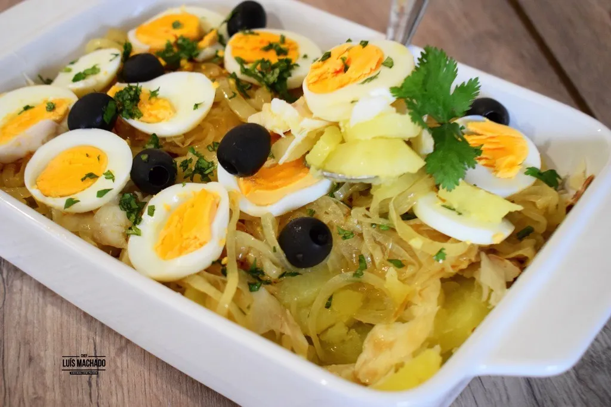

BACALHAU A GOMES DE SA

INGREDIENTS
- 1 pound of salt cod
- 1 pound of potatoes
- 1 large onion
- 2 cloves of garlic
- 1/2 cup of olive oil
- 1/2 cup of milk
- 2 tablespoons of chopped fresh parsley
- 1/2 teaspoon of black pepper
- 1/4 teaspoon of nutmeg
- 1/4 teaspoon of paprika
- 1 bay leaf
- 1 cup of black olives (optional)
INSTRUCTIONS
- Soak the salt cod in water for 24 hours, changing the water every 6 hours.
- Preheat the oven to 400°F (200°C).
- Peel the potatoes and cut them into thin slices.
- Peel and slice the onion.
- Peel and chop the garlic.
- In a large frying pan, heat the olive oil over medium heat.
- Add the onion and garlic and sauté until the onion is translucent.
- Add the sliced potatoes and stir well.
- Add the milk, parsley, black pepper, nutmeg, paprika, and bay leaf. Stir well.
- Simmer for 10 minutes, stirring occasionally.
- Remove the salt cod from the water and place it on top of the potatoes.
- Add the black olives (optional).
- Cover with aluminum foil and bake for 30 minutes.
- Remove the aluminum foil and bake for another 10 minutes, until the potatoes are golden brown.
- Remove the bay leaf and serve hot.
- Enjoy your delicious Portuguese Bacalhau!